Consulta nutricional individual
Uma conversa completa sobre rotina, histórico, gostos e objetivos para entender o seu momento.
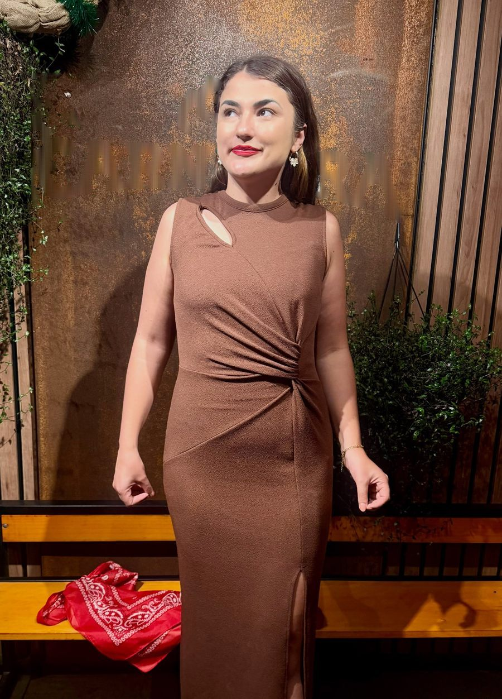
Nutrição para emagrecimento e performance em Guarapuava, com saúde, rotina real e um atendimento personalizado e humanizado.
5,0 no Google · 17 avaliações
Meu trabalho vai muito além de emagrecer. É sobre cuidar de vidas, promover saúde e construir uma rotina que você consegue manter.
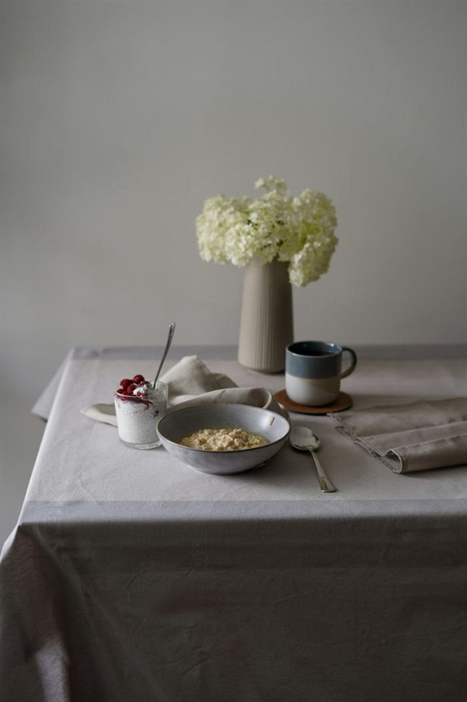
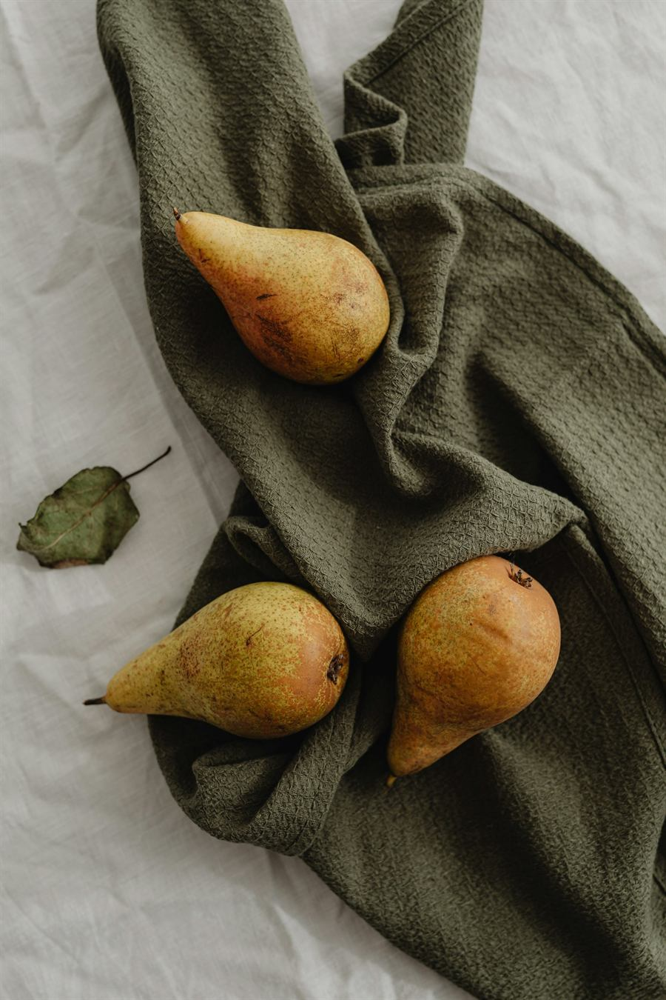
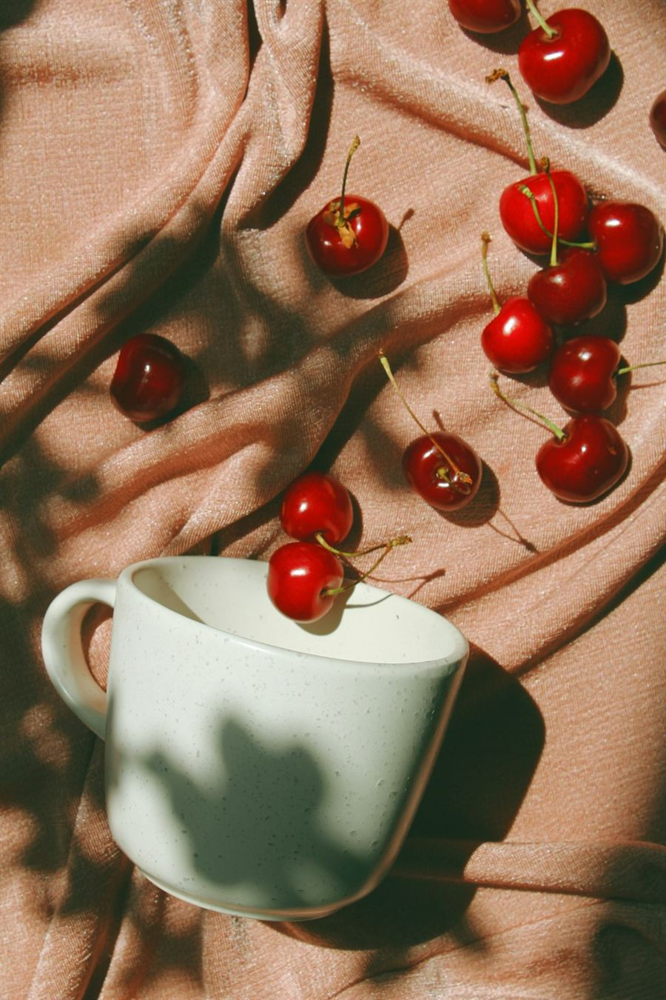
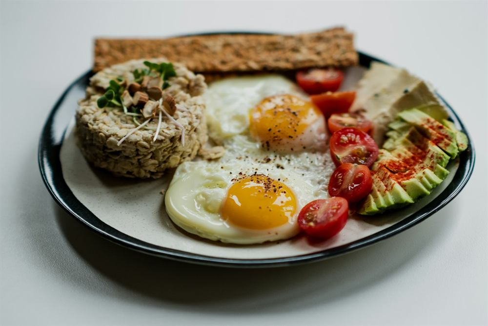
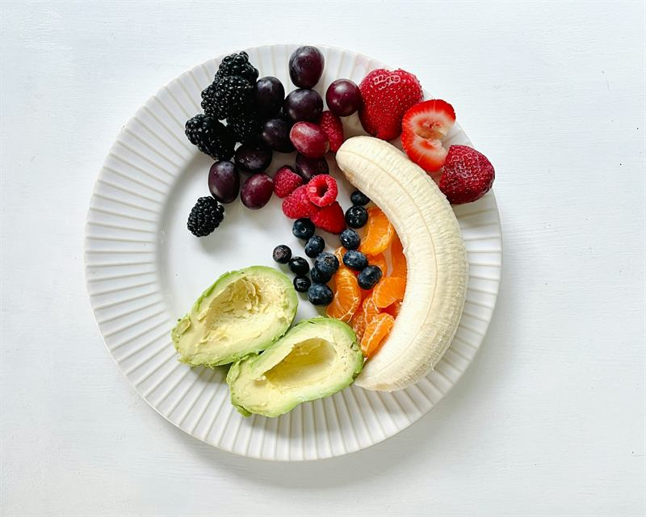
Escolhi a nutrição depois de perder meu pai para o câncer, quando eu tinha 7 anos. Essa dor virou propósito: ajudar pessoas a viverem mais e melhor, através da alimentação, da prevenção e do cuidado com a saúde.
Uma conversa completa sobre rotina, histórico, gostos e objetivos para entender o seu momento.
Um plano estratégico e possível, sem dieta da moda, para emagrecer cuidando da saúde.
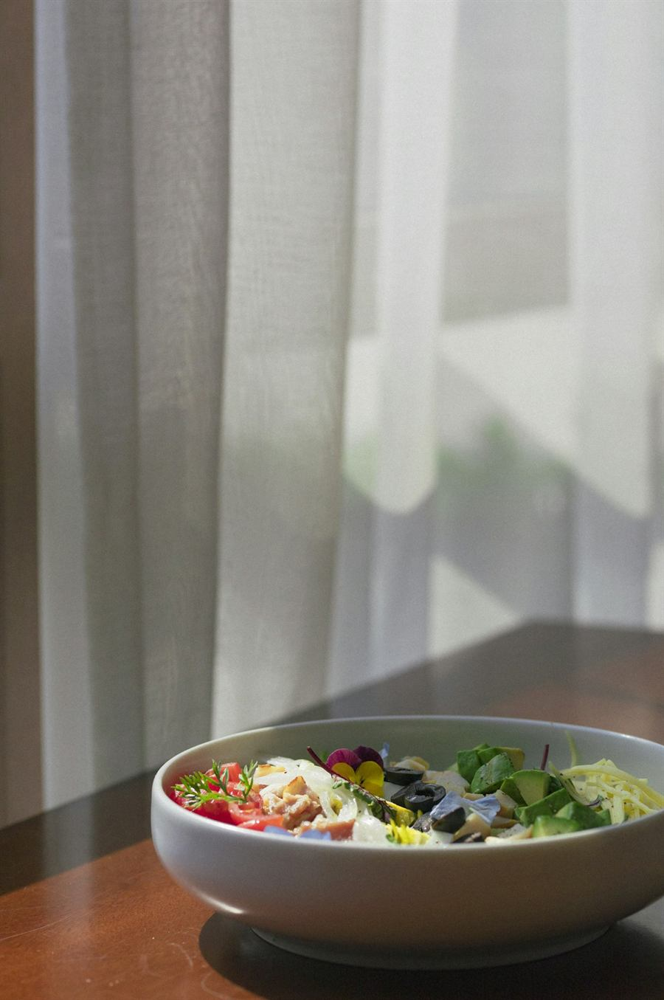
Alimentação alinhada ao seu treino para ganhar performance, energia e recuperação.
Ajustes no plano, dúvidas respondidas e alguém do seu lado em cada fase.
Primeira consulta dá um friozinho na barriga, eu sei. Então aqui vai o caminho inteiro, para você chegar com tranquilidade.
Quero começarConversa completa sobre rotina, histórico, gostos e objetivos.
Um plano alimentar feito para a sua realidade, com opções que você gosta.
Retornos para ajustar o que for preciso.
Você aprende a fazer escolhas com tranquilidade, sem depender de dieta.
Aqui não tem foto de corpo. Tem rotina, prato e relação com a comida. Arraste a cereja e veja a diferença.
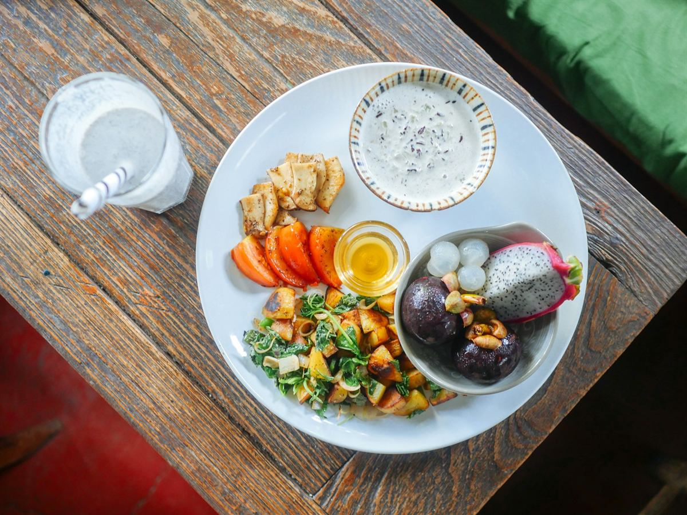
Sabe ouvir a rotina do paciente. Um atendimento acolhedor e individualizado.
“Desde o início fui muito bem acolhida e recebi um plano alimentar personalizado, que se encaixou na minha rotina e nos meus objetivos. Profissional maravilhosa e muito atenciosa.”
“Uma excelente profissional, me senti muito acolhida. Tratamento personalizado dentro da realidade individual de cada paciente. Super recomendo.”
“Sempre orienta com muito conhecimento, cuidado e responsabilidade. O atendimento é acolhedor e individualizado, sem imposições ou cobranças exageradas.”
“Plano alimentar muito bom, que se adapta à nossa rotina.”
“Recomendo o atendimento pela dedicação, competência e cuidado com os pacientes.”
17 avaliações de pacientes que falam de acolhimento, estratégia e plano possível.
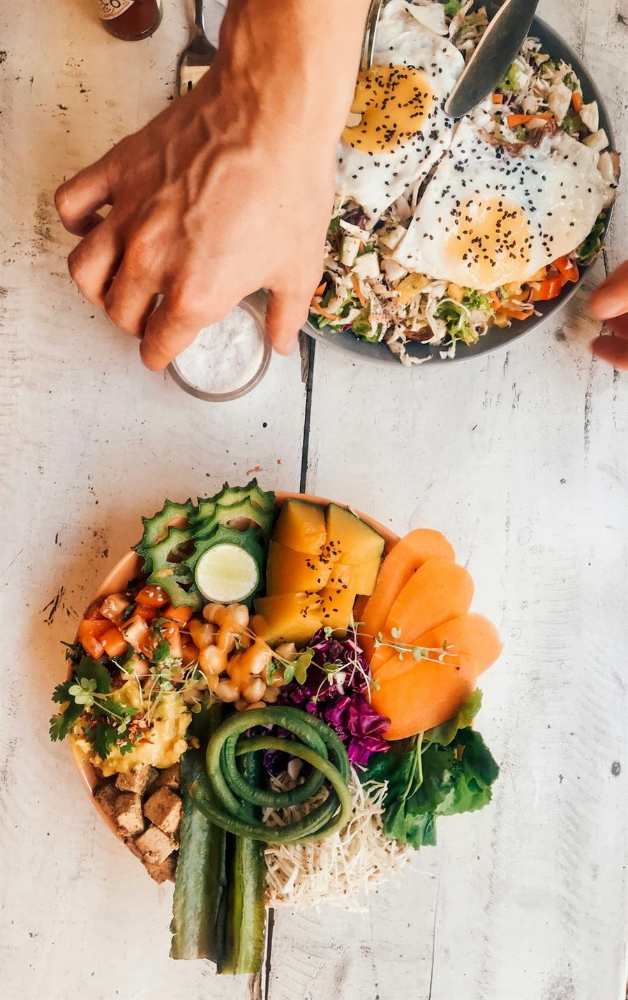
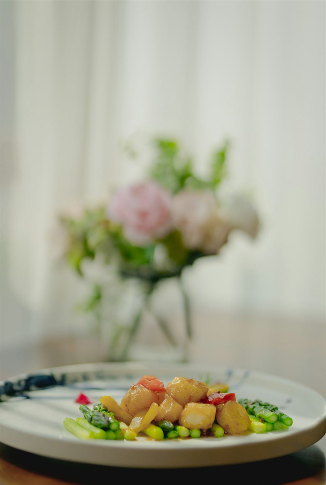
O que mais me perguntam sobre a consulta nutricional em Guarapuava. Ficou alguma dúvida? Me chama no WhatsApp.
Falar no WhatsAppÉ uma conversa completa e sem pressa sobre a sua rotina, histórico de saúde, preferências, horários e objetivos. A partir dela eu monto o seu plano alimentar personalizado.
Se você tiver exames recentes, leve, porque eles ajudam a entender o seu momento. Se não tiver, tudo bem: na consulta eu avalio e, se fizer sentido, solicito os exames que podem ajudar.
Depende do seu objetivo e do seu momento. Os retornos servem para ajustar o plano e tirar dúvidas, e a frequência ideal é combinada com você.
Sempre. Nada de dieta pronta: o plano é montado a partir da sua rotina, do seu gosto, do seu orçamento e da sua realidade.
Na Rua Romeu Karpinski Rocha, 3920, no bairro Bonsucesso, em Guarapuava, PR. O atendimento é com horário marcado pelo WhatsApp.
Sim. A nutrição esportiva é uma das minhas áreas: o plano é pensado para o seu treino, o seu objetivo e a sua rotina.
Não. A ideia é encaixar o que você gosta com equilíbrio, inclusive o docinho e a comida do fim de semana.
Agende sua consulta e vamos montar uma estratégia de alimentação que combina com a sua rotina.
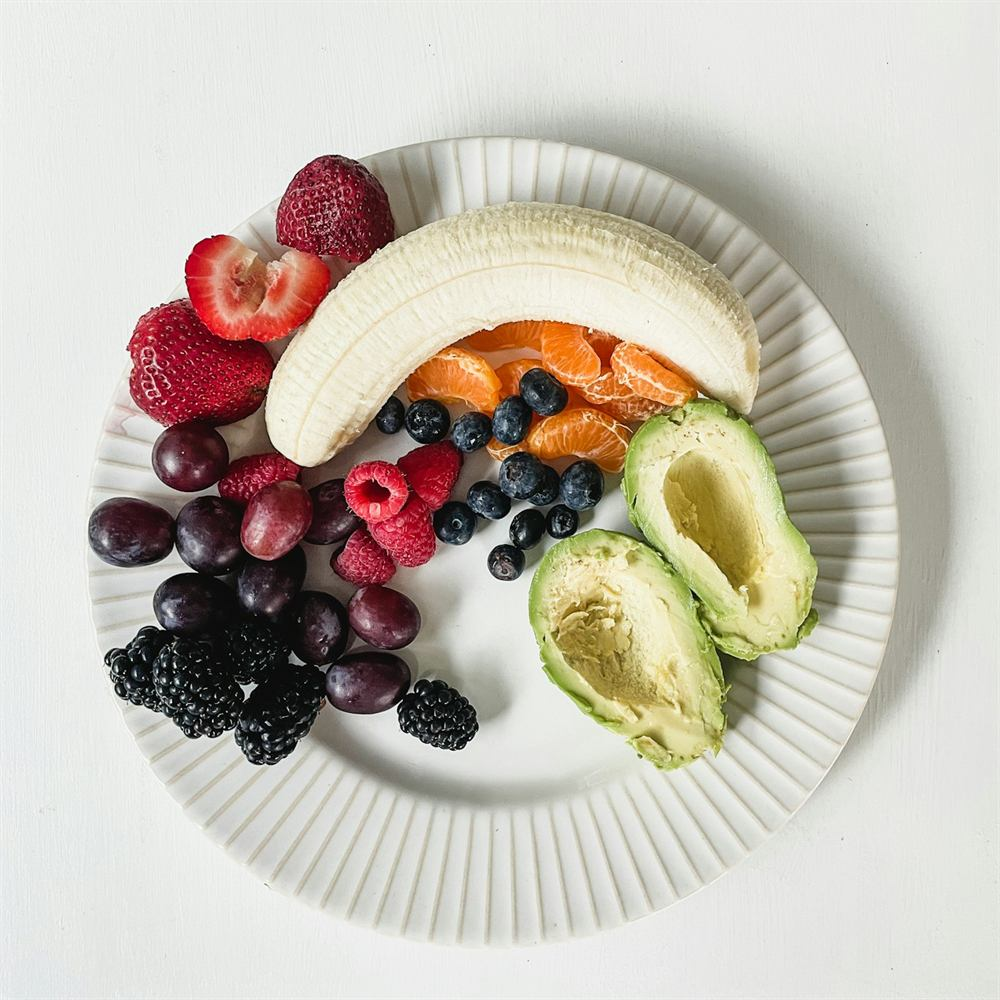